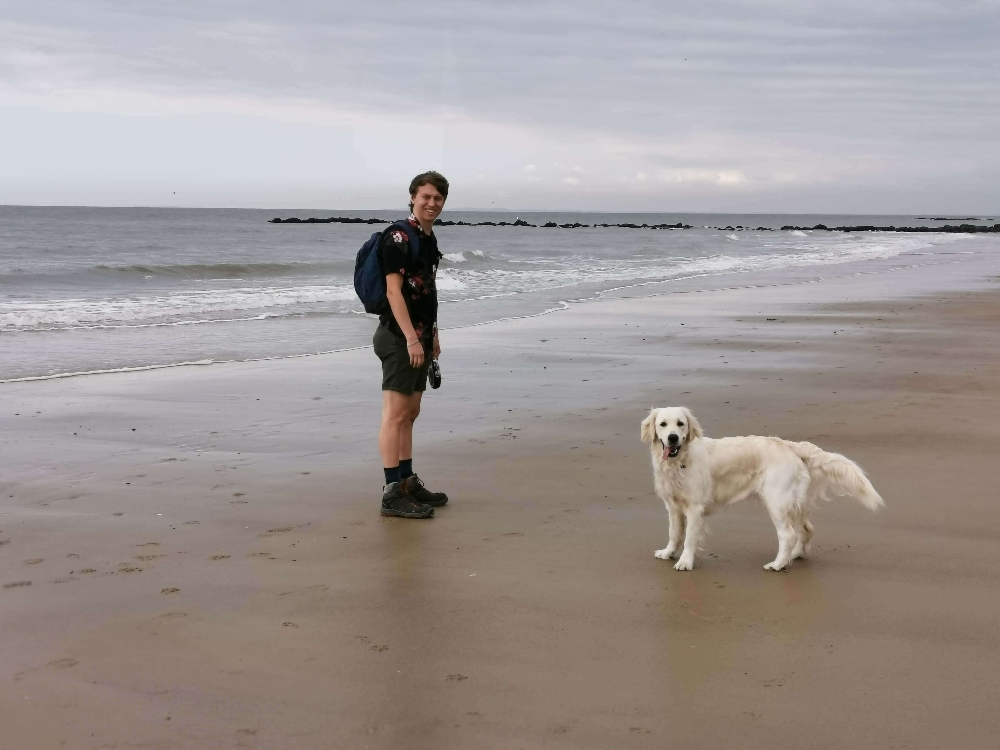
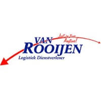

Wie ben ik?
Mijn naam is Mathijs Wouters, 20 jaar, met een hart voor avontuur en verbinding. Ervaringen hebben mij gevormd, veelal opgedaan tijdens zonnige zondagen en onvergetelijke kampen. Als sociaal persoon hecht ik veel waarde aan de banden die we smeden. Graag deel ik met u meer over mijn levensreis en de ervaringen die mij gemaakt hebben tot wie ik nu ben.
Curriculum vitae
Interesses
Centraal in mijn leven staat de Chiro. Het bood me avontuur en vriendschap. Op zondagen en tijdens kampen in Spanje, groeide ik. De Chiro leerde me over leiderschap en teamwork. Mijn rol ontwikkelde sociale vaardigheden die diep zijn verankerd. Andere passies kwamen en gingen, maar de Chiro blijft centraal. De banden en groei die het biedt, zijn onvervangbaar in mijn leven.
Hobby's

Werkervaring
Bij Van Rooijen Logistiek startte mijn carrière in het magazijn, waar ik bestellingen gereed maakte. Na twee jaar maakte ik de overgang naar de administratie, waar ik chauffeursdocumenten verwerkte en databestanden beheerde. Deze dynamische rolverandering bood mij zowel uitdaging als professionele groei binnen het bedrijf.
Ervaringen